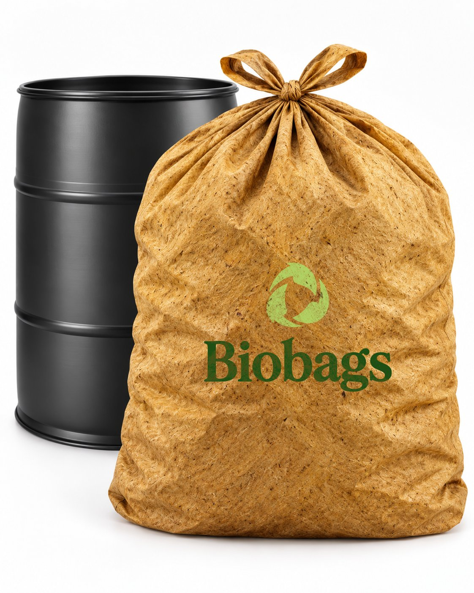

Bolsas que se van, no que se quedan
Bolsas de basura biodegradables, hechas con carbón activado y residuos de cáscara de banano, que se descomponen en meses bajo compostaje. Cada compra ayuda a reemplazar el plástico de un solo uso.

¿Por qué importa este proyecto?
Una bolsa plástica común se usa por minutos, pero se queda en el ambiente por generaciones. Las bolsas de Bio Bags —ya sea la Básica de carbón activado o la Plus de residuos de cáscara de banano— se descomponen en cuestión de meses bajo compostaje y, de paso, neutralizan los malos olores mientras están en uso.
Producir cada tanda tiene un costo: materia prima, maquila y logística. Por eso esta página funciona como una compra rápida y directa — lo que aportas hoy se convierte en las bolsas de mañana.
Conoce cada bolsa de cerca
Recorre las dos líneas: la bolsa completa y el detalle de su material.
Nuestras bolsas
Dos líneas, dos materiales distintos. Cada una neutraliza los malos olores con su propio aroma natural. Se venden por paquete de 6 bolsas.
Qué hay detrás del precio
Cada paquete paga la materia prima, la maquila y la logística de la siguiente tanda. Así se ve lo que recibes por tu aporte.
Tu aporte
Elige tu bolsa Cantidad de paquetes (6 bolsas c/u)Página de demostración — conecta aquí tu pasarela de pago o enlace de contacto.
¡Gracias por tu aporte!
De tu aporte a tu bote de basura
Cuatro pasos, sin complicaciones.
-
1
Elige tu bolsa
Básica (carbón activado, aroma a limón) o Plus (residuos de cáscara de banano, aroma a café), en paquetes de 6.
-
2
Haz tu aporte
Cada compra financia la siguiente tanda de producción: materia prima, maquila y logística.
-
3
Coordinamos la entrega
Te contactamos para acordar cómo y cuándo recibes tu pedido.
-
4
Úsala y compóstala
Neutraliza los malos olores mientras la usas y, al terminar, se descompone en meses bajo compostaje.